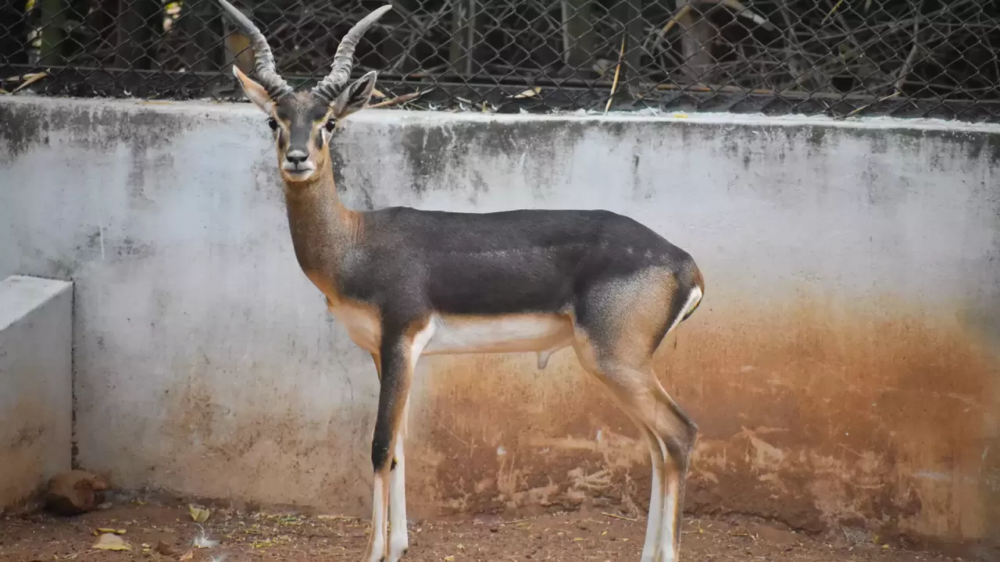

Guindy National Park
Right in the midst of a metropolitan urban settlement lies a serene strip of land, so relaxing and comforting. Living in its heart are a variety of species that are well protected and looked after. Guindy National Park is a wonder that Chennai has for the world.
If you want to see wild animals and don’t feel like travelling much deeper into the jungles, then you can always go to Chennai. Guindy National Park, the 8th smallest national park in India is right here within the city limits. Covered with lush green vegetation, Guindy National Park is an idyllic spot to spend a day in the shades of varied species of trees, watching animals. An extension of the grounds surrounding the Tamil Nadu Raj Bhavan (the Governor’s residence), it extends deep inside the Governor’s estate and is filled with picturesque forests, scrubs and streams
The Guindy National Park is spread over an area of just 2.70 sq.km.. Despite being of a relatively smaller size, it doesn’t cease to amaze the visitors in a big way. The park is home to a remarkable assortment of flora and fauna. Some of the species of animals protected here include Blackbuck, Jackal, Spotted Deer, Snake, Tortoise and so on. The Blackbuck population is around 400 and there are also around 200 Spotted Deers. Over 130 species of local and migratory birds have been found in the park. Some of these include Crow Pheasant, Shrike, Tailor Bird, Garganey, Pariah Kate, Pond Heron, Medium Egret and so goes the list. Apart from the amazing fauna, the park is also rich in flora. Thorn Forest, Dry Evergreen Scrub, Grasslands etc. are a part of the park and offer a visual treat to the visitors.
Make sure to enjoy this visual feast on your trip to Chennai.